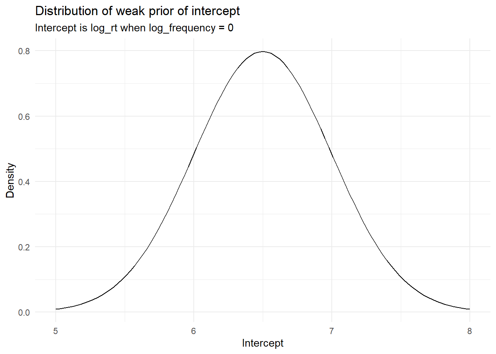
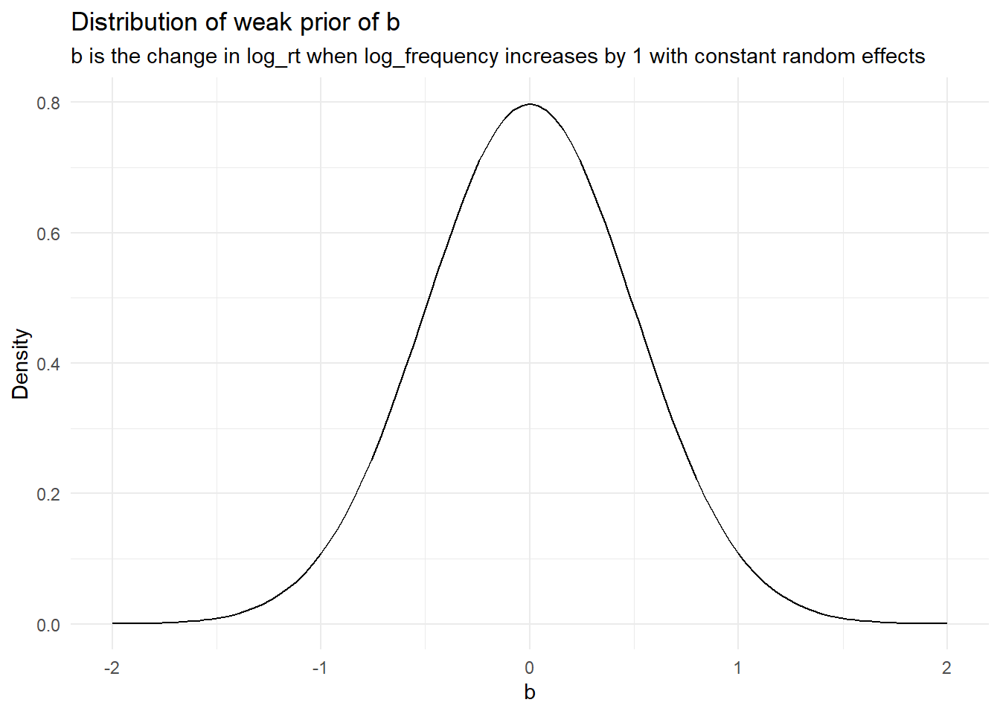
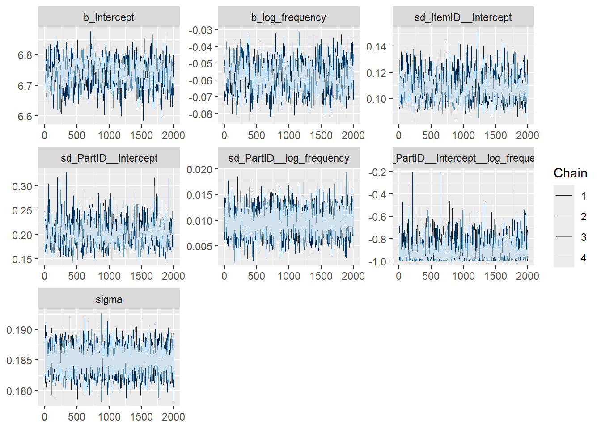
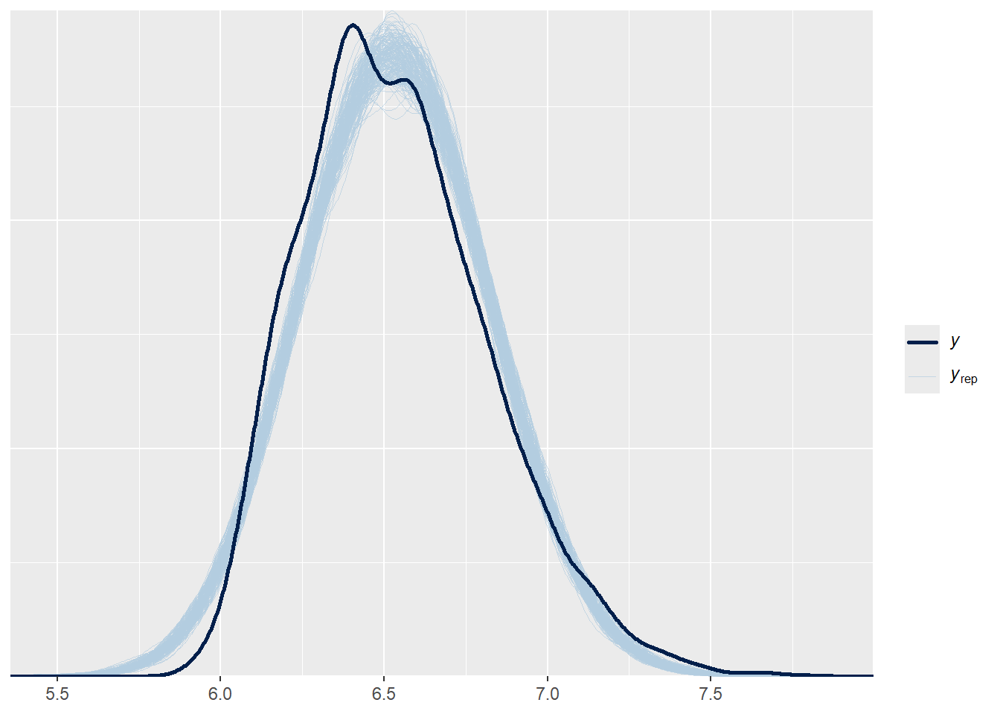

In an earlier homework, we have assessed the following hypothesis:
“We hypothesize that log-transformed reaction times are affected by lexical frequency”
We tried to run the following model that included an appropriate random effect structure but it did not converge with lme4:
# formulate the corresponding LMERquant_lmer <-lmer(log_rt ~ log_frequency + (1+ log_frequency | PartID) + (1| ItemID), data = quantese)# your receive a warning: "boundary (singular) fit: see help('isSingular')"
Now we will re-run this model within the Bayesian framework:
(A) Specify priors
Check which priors this model needs and specify weakly informative priors.
Remember that weakly informative priors are priors that do not bias the posteriors in any direction, but reasonably constrain the parameter space, i.e. only reasonable values are assumed.
For priors of class Intercept and b, constrain the parameter space with a wide normal distribution.
# Setting up the base formula for finding log_rt as a function of log_frequencymdl_formula <-bf (log_rt ~ log_frequency + (1+ log_frequency | PartID) + (1| ItemID) )# Finding what needs priors in mdl_formulaget_prior(mdl_formula, quantese)
# specify weakly informative priorsmy_priors <-c(# Most RT experiments tend to show an RT of 400 - 1000 ms. Naming something# in an invented language will likely involve a variety of processes in the# brain. Taking the middle here of 700 ms, means I will assume an intercept# of about ~6.5, by rounding an approximate log. Exp(6) ~ 403 and exp(7)# ~ 1097 ms, so I find a standard deviation on 0.5 sufficiently wide.prior(normal(6.5,0.5), class ="Intercept"),# For a weak prior I will expect no change, and take the same variation# as I used for the intercept.prior(normal(0,0.5), class ="b"))# Plotting my weak priors with wide limits.ggplot()+stat_function( fun = dnorm,args =list ( mean =6.5,sd =0.5 ) ) +xlim(5, 8) +labs( title ="Distribution of weak prior of intercept",subtitle ="Intercept is log_rt when log_frequency = 0",x ="Intercept",y ="Density" ) +theme_minimal()

ggplot()+stat_function( fun = dnorm,args =list ( mean =0,sd =0.5 ) ) +xlim(-2, 2) +labs( title ="Distribution of weak prior of b",subtitle ="b is the change in log_rt when log_frequency increases by 1 with constant random effects",x ="b",y ="Density" ) +theme_minimal()

We can also now get used to specifying priors for classes sd and cor. Priors of class sd are priors for the variance associated with our random effects. You see here 2 sd priors for group ItemID. The first one is just a generic prior for all ItemID coefficients and the second one with the coef = Intercept stands for the random intercept variation between items. Similarly for group PartID, we have 3 priors. The first one is again just a generic prior for all PartID coefficients. The second one with the coef = Intercept stands for the random intercept variation between participants. And the last one with the coef = log_frequency stands for the random slope variation between participants for the predictor log_frequency. How do we specify these priors. We have usually no idea what to expect from these parameters, so we here also specify very diffuse priors centered on zero. We pick a cauchy distribution (remember? super squashed normal distributions) because they have thick tails. Let’s make them super diffuse and pick a sd = 3 for both items and participants.
# add weakly informative priors for sdmy_priors <-c(my_priors, prior(cauchy(0, 3), class ='sd', group ='ItemID'),prior(cauchy(0, 3), class ='sd', group ='PartID'))
And finally, if your model as random slopes, they have by default a correlation parameter for intercept and slope. We are not getting into the math here and will follow advice from smart people. We use Lewandowski-Kurowicka-Joe priors (shape = 1): lkj(1). Specifying this prior for random slope models actually helps a lot with the fitting procedure.
# add weakly informative priors for cormy_priors <-c(my_priors, prior(lkj(1), class ='cor'))
(B) Run model
Now run the model with 4 chains, 1000 warm-up and 1000 post-warm-up samples per chain. Check that chains are reasonably mixed and that sampling yielded a sufficient effective sample size. If not address the issues appropriately (check slides again).
# if the model takes way too long to sample (more than 5-10 mins), use the following subset# quantese_sub <- quantese |> # filter(PartID %in% c("01","02","03","04",# "05","06","07","08"))xmdl <-brm(log_rt ~ log_frequency + (1+ log_frequency | PartID) + (1| ItemID),family =gaussian(),prior = my_priors,data = quantese,chains =4,iter =4000,warmup =2000,seed =333)
Family: gaussian
Links: mu = identity
Formula: log_rt ~ log_frequency + (1 + log_frequency | PartID) + (1 | ItemID)
Data: quantese (Number of observations: 5000)
Draws: 4 chains, each with iter = 4000; warmup = 2000; thin = 1;
total post-warmup draws = 8000
Multilevel Hyperparameters:
~ItemID (Number of levels: 100)
Estimate Est.Error l-95% CI u-95% CI Rhat Bulk_ESS Tail_ESS
sd(Intercept) 0.11 0.01 0.09 0.13 1.00 1260 1988
~PartID (Number of levels: 50)
Estimate Est.Error l-95% CI u-95% CI Rhat Bulk_ESS
sd(Intercept) 0.20 0.02 0.16 0.25 1.00 902
sd(log_frequency) 0.01 0.00 0.01 0.01 1.00 2572
cor(Intercept,log_frequency) -0.92 0.07 -1.00 -0.72 1.00 2220
Tail_ESS
sd(Intercept) 1489
sd(log_frequency) 3329
cor(Intercept,log_frequency) 3030
Regression Coefficients:
Estimate Est.Error l-95% CI u-95% CI Rhat Bulk_ESS Tail_ESS
Intercept 6.74 0.04 6.66 6.82 1.00 537 1244
log_frequency -0.06 0.01 -0.07 -0.04 1.00 793 1276
Further Distributional Parameters:
Estimate Est.Error l-95% CI u-95% CI Rhat Bulk_ESS Tail_ESS
sigma 0.18 0.00 0.18 0.19 1.00 10266 6539
Draws were sampled using sample(hmc). For each parameter, Bulk_ESS
and Tail_ESS are effective sample size measures, and Rhat is the potential
scale reduction factor on split chains (at convergence, Rhat = 1).
mcmc_plot(xmdl, type ="trace")

pp_check(xmdl, ndraws =200)

We see a max Rhat of 1.01 for sd(Intercept), Intercept and log_frequency. The model was run again with a larger number of iterations to combat this. A model on 4000 iterations (200 warmup) showed a Rhat of 1.0 across the board. It also shows a smallest effective sampling size of more than 500. An estimate of 6.74 for the intercept means that the model predicts the average RT to be ~846 ms (exp(6.74)). Exp(-0.06) = ~0.9 so we also expect a slight decrease in RT as the log_frequency increases. The plots mainly look like caterpillars, but note the sd_partID_Intercept_log_frequencies one bottoming out. PPCheck also gives an acceptable similarity. Arguably, the posterior samples show a bit higher mean, but it is very slight.
(C) Plot posterior predictions
Find a way to extract posterior samples from the model for the Intercept and the log_frequency coefficient and plot the predicted posterior mean linear model alongside its 95% Credible Intervals. There are many different ways to get there.
library(tidybayes)quantese %>%# Makes a dataframe with 500 even points from minimum to maximum of log_frequencydata_grid(log_frequency =seq_range(log_frequency,500)) %>%# Computes predicted values of model. # https://mjskay.github.io/tidybayes/articles/tidybayes.html# Note than "re_formula = NA" limits the plot to only fixed effects.add_epred_draws(xmdl,re_formula =NA) %>%# Generate a plot with log_frequency as x and the predictions as y.ggplot(aes(x = log_frequency,y = .epred)) +# Gives regression and 95% confidence interval as a line, # from the tidybayes guide.stat_lineribbon(.width =0.95,fill ="lightblue",alpha =0.6) +# Plots all log_rt on the plot.geom_point(data = quantese,aes(y = log_rt),alpha =0.1,size =0.1) +labs(title ="Posterior prediction of log_rt given a log_frequency",subtitle ="Points are observed values of log_rt\nShaded area is 95% confidence interval.",x ="log_frequency",y ="log_rt") +theme_minimal()